LAB02
Conjuntos, relaciones y combinatoria, en R y en Python.
Parte 1Conjuntos de jugadores
Parte 2Jugador → Club → Temporada
Parte 3Principio multiplicativo
Un JupyterLab con Python y R
- El laboratorio pide resolverlo en R y en Python, y la imagen del Lab01 solo traía Python.
- Cambio de una línea en
docker-compose.yml:jupyter/datascience-notebooktrae Python, R 4.3 y Julia. - El entorno sigue siendo reproducible: nadie tiene que instalar R en su equipo.
datasets/lab02/futbol_data/ # 40 CSV notebooks/lab02/ # 3 partes × (Python + R) laboratorios/lab02/ # enunciado y presentación
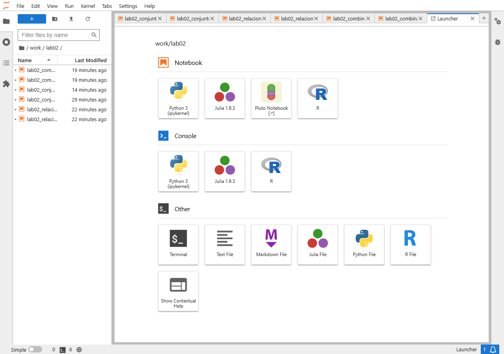
40 plantillas, 20 temporadas, 2 clubes
- Un CSV por club y temporada:
atletico_2014-15.csv,barcelona_2009-10.csv… - Una sola columna,
jugador. El club y la temporada solo están en el nombre del archivo. - Los archivos llevan BOM: sin la codificación correcta, la columna se lee como
jugador. - Datos limpios: sin espacios sobrantes, sin filas vacías y sin nombres escritos de dos formas.
atletico_2004-05.csv jugador Antonio López Colsa Fernando Torres García Calvo … Club A = Atlético · 20 archivos · 264 filas Club B = Barcelona · 20 archivos · 287 filas
P1
Cada club como un conjunto de jugadores.
De 551 filas a dos conjuntos
- Se leen automáticamente los 20 archivos de cada club:
globen Python ylist.filesen R. - Un jugador aparece en tantas filas como temporadas jugó. Al pasar a
set(o conunique()en R) desaparecen los duplicados. - Resultado: 58 jugadores distintos en el Atlético y 53 en el Barcelona.
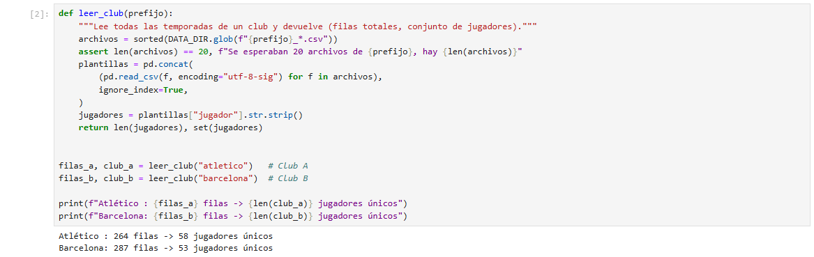
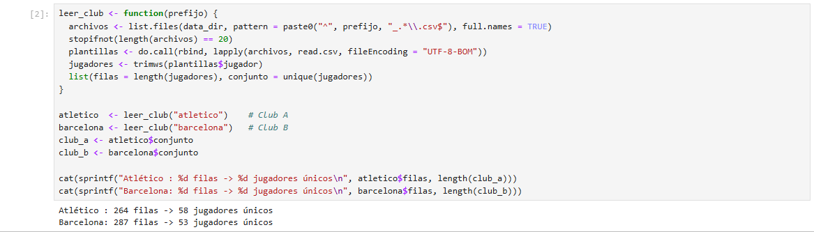
Ordenar alfabéticamente no es trivial
sorted()de Python compara códigos Unicode: «Álvaro» acaba detrás de «Zé».- Hay 19 filas que empiezan por vocal con tilde, así que el problema es real.
- Solución: ordenar con una clave sin tildes y en minúsculas (
unicodedata+casefold). - En R,
sort()usa la configuración regional (en_US.UTF-8) y ya ordena bien.
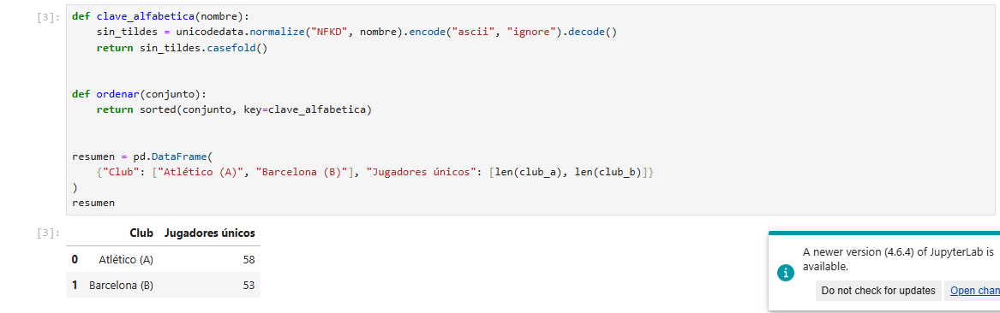
Operaciones con conjuntos
Las mismas operaciones, en dos lenguajes
- Python tiene operadores de conjunto:
|unión,&intersección,-diferencia,^diferencia simétrica. - R usa funciones:
union(),intersect(),setdiff(). - R base no tiene diferencia simétrica: se construye como
union(setdiff(A,B), setdiff(B,A)). - Con
U = A ∪ B, el complemento de la intersección coincide con la diferencia simétrica, y el notebook lo comprueba.
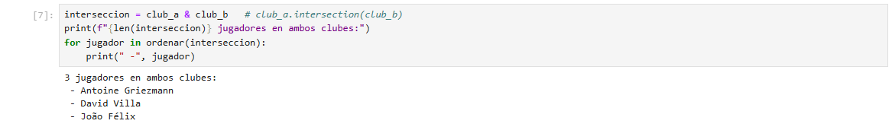
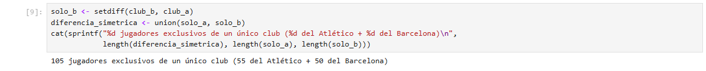
2,78%
Solo 3 de 108 jugadores han pasado por los dos clubes
- Griezmann, Villa y João Félix: el 2,78 % del universo.
- El Atlético tiene más jugadores exclusivos: 55 frente a 50.
- Comprobación: |A ∪ B| = 58 + 53 − 3 = 108 (inclusión-exclusión).
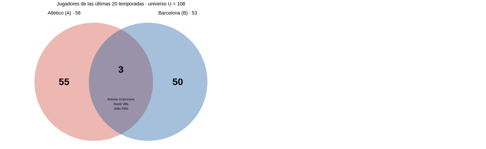
P2
Recuperar el cuándo: Jugador → Club → Temporada.
La relación completa: 551 tripletas
- Al eliminar duplicados en la parte 1 se perdió en qué temporadas estuvo cada jugador.
- Cada fila es un elemento de
R ⊆ J × C × T; el club y la temporada se extraen del nombre del archivo con una expresión regular. - Tabla: una fila por tripleta, sin repetidas.
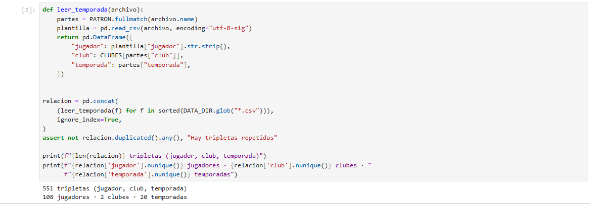
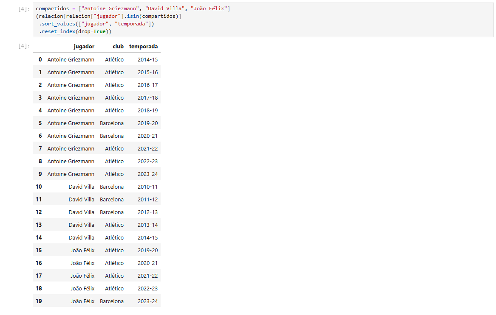
Diccionario en Python, lista en R
- Estructura anidada
jugador → club → [temporadas]: se consulta directamente por nombre. - Griezmann: 8 temporadas en el Atlético y 2 en el Barcelona, con un regreso en 2021-22.
- En R,
split()agrupa por jugador y luego por club.
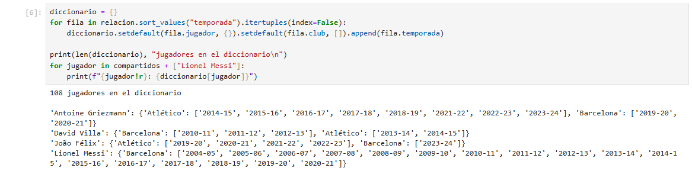
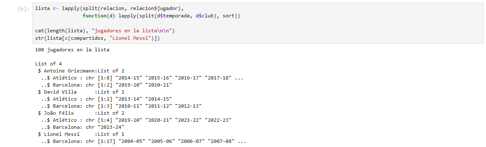
Un grafo simple jugador–club, en 3D
- 110 nodos (108 jugadores y 2 clubes) y 111 aristas, sin repetidas ni bucles.
- La temporada no se pierde: cuantas más temporadas, más brillante es la arista y más grande el punto.
- Los 3 compartidos quedan entre los dos clubes. El Barcelona forma un grupo más compacto porque sus jugadores acumulan más temporadas.
17
Messi, el jugador con más temporadas
- Le siguen Iniesta y Busquets (15), Piqué (14) y Koke (13).
- Densidad = pares / (jugadores × 20 temporadas): la parte ocupada de la matriz jugador × temporada.
- El Barcelona es más denso: 0,271 frente a 0,228. Sus jugadores se quedan de media 5,4 temporadas, frente a 4,6 en el Atlético.
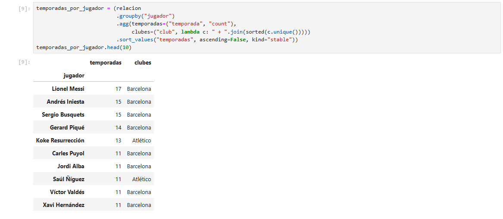
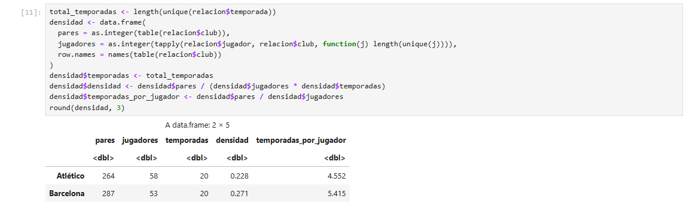
P3
¿Cuántos outfits puede recomendar una tienda online?
3×2×2=12
El principio multiplicativo
- 3 camisetas → por cada una, 2 pantalones (6) → por cada combinación, 2 pares de zapatos (12).
- El árbol lo muestra: cada nivel multiplica las ramas del anterior.
- Con un catálogo real (200 × 80 × 50) serían 800 000 combinaciones, así que un recomendador tiene que filtrar y ordenar, no enseñarlas todas.
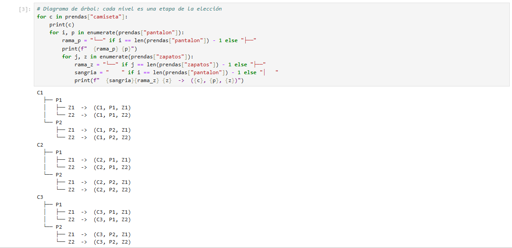
Generar los 12 y comprobar que son 12
- Python:
itertools.product, el producto cartesianoC × P × Z. - R:
expand.grid(), con las categorías en orden inverso para obtener el mismo orden que en Python. - Verificación: 12 generadas, 12 distintas y 12 según el principio multiplicativo.
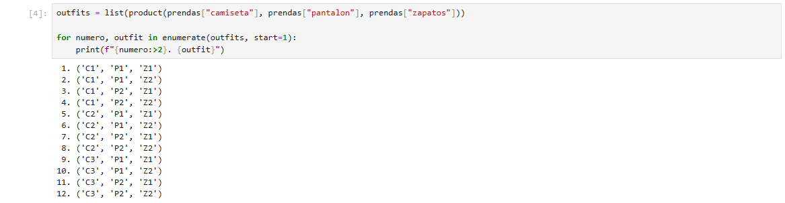
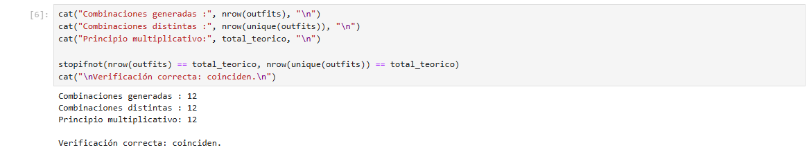
Mismo problema, dos lenguajes, mismos resultados.
Conjuntos, relaciones y combinatoria resueltos en Python y en R, dentro del mismo JupyterLab, con resultados idénticos y comprobados en cada parte.